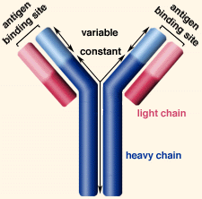

Introduction to Immunology
Problem 6.
Antigen combining sites
Tutorial to help answer the question:
If a B cell clone began to produce antibody
with altered binding strength and specificity for antigen, you
would expect the mutation of the antibody gene to involve:
| A. |
The variable region of the heavy chain
or the constant region of the light chain |
| B. |
The variable region of the light chain
or the constant region of the heavy chain |
| C. |
The variable regions of the light or heavy
chains |
| D. |
The constant regions of the light or heavy
chains |
Tutorial
| 
|
The "variable" region includes 110-130 amino acids of the
light and heavy chains, and is responsible for binding to antigen.
This part of the antibody shows variations in amino acids when
the specificity of the antibody for antigen is changed. The
"constant" region is the C-terminal end and contains similar
amino acids for each class of antibody. The five major classes
of heavy chain are IgM, IgG, IgA, IgD, and IgE. |
|
Problem
6 | Answer | Problem 7
The Biology Project > Immunology
> Immunology Problem Set
|